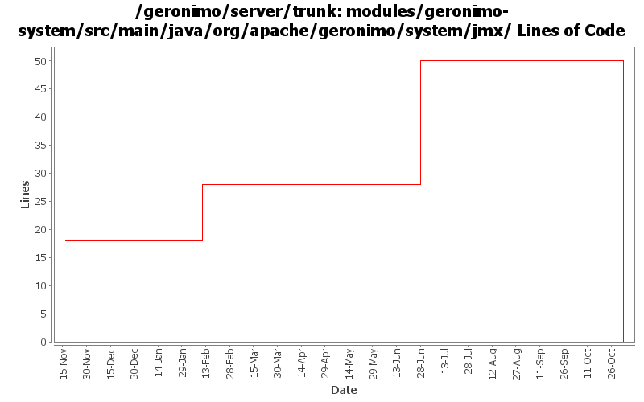

[root]/modules/geronimo-system/src/main/java/org/apache/geronimo/system/jmx

| Author | Changes | Lines of Code | Lines per Change |
|---|---|---|---|
| Totals | 39 (100.0%) | 53 (100.0%) | 1.3 |
| vamsic007 | 1 (2.6%) | 24 (45.3%) | 24.0 |
| rickmcguire | 3 (7.7%) | 18 (34.0%) | 6.0 |
| djencks | 1 (2.6%) | 10 (18.9%) | 10.0 |
| akulshreshtha | 1 (2.6%) | 1 (1.9%) | 1.0 |
| prasad | 11 (28.2%) | 0 (0.0%) | 0.0 |
| kevan | 22 (56.4%) | 0 (0.0%) | 0.0 |
GERONIMO-3565. Modules distributed amongst framework/modules and plugins
0 lines of code changed in 11 files:
GERONIMO-3268 RealMBeanServerReference unintentionally uses an MBeanServer not created by Geronimo
o Added a constructor so that Geronimo always uses an MBeanServer with default domain "geronimo".
24 lines of code changed in 1 file:
GERONIMO-3246 Cleanup exception handling so stack traces for first failures are not discarded.
18 lines of code changed in 3 files:
Try to help show what went wrong if a configuration won
't start
10 lines of code changed in 1 file:
GERONIMO-2607 Added returnType to GOperationInfo, This modifies GBeanInfoBuilder and breaks backward compatibility
1 lines of code changed in 1 file:
GERONIMO-2537 Update the src headers in server/trunk/modules to be compliant with the new ASF src header and copyright policy (http://www.apache.org/legal/src-headers.html). I also did some cleanup of the src headers and tried to make them all a consistent format
0 lines of code changed in 22 files: